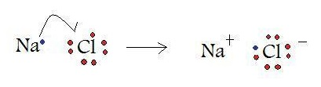
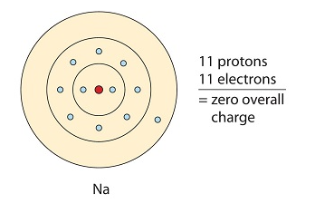
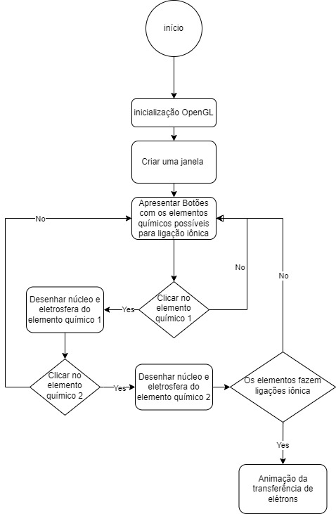

Ligações iônicas são ligações químicas que ocorrem entre átomos quando estes reagem entre si a fim de alcançarem estabilidade eletrônica. Em ligações iônicas, um átomo de um metal cede definitivamente um ou mais elétrons para um átomo de um não metal ou hidrogênio. Nesse tipo de ligação os metais têm tendência a formar cátions e os não metais têm tendência a formar ânions. Sempre que um elemento necessitar doar ou receber elétrons para alcançar a estabilidade eletrônica, a ligação será do tipo iônica. A estabilidade eletrônica é definida conforme a regra do octeto, onde um átomo só atinge a estabilidade quando possuir 8 elétrons na camada de valência ou 2 no caso do hidrogênio, assim dessa forma o átomo fica com a mesma configuração eletrônica de um gás nobre tornando-se estável.
Figura 1 - Neste exemplo o átomo de sódio (Na) doa 1 elétron de valência para o átomo de Cloro (Cl).
Tendo esse ponto de partida teórico, o objetivo deste trabalho é a representação visual de ligações iônicas entre alguns átomos de metais e não metais, permitindo a visualização de alguns dos conceitos aqui apresentados. O programa a ser desenvolvido permitirá a escolha de dois átomos ligantes dentro de um conjunto pré-definido de elementos e através de gráficos gerados por computador, mostrar ao usuário a formação da ligação resultante entre os átomos selecionados conforme o modelo de Bohr, onde o átomo é visualmente descrito por uma esfera maciça ao centro representando o núcleo (prótons e nêutrons) e os elétrons representados por pequenos pontos orbitando ao redor do núcleo em círculos concêntricos no que se denomina como eletrosfera e está distribuída através das camadas K, L, M, N, O, P, Q.
Figura 2 - Representação de Bohr para o átomo de sódio (Na), no programa os átomos ligantes serão graficamente representados conforme o modelo de Bohr aqui exemplificado.

Figura 3 - Representação do fluxograma descrevendo a Modelagem Funcional do sistema.